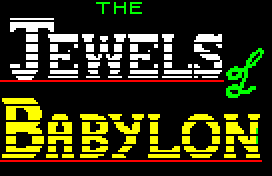

 |
Unused |
| Prev: 48248 | Up: Map | Next: 48280 |
|
Spare bytes in the 32-byte scenic-event location table at Table_ScenicEventLocations. Count_ScenicEvents is 9, and the loops from 49584 and 50472 stop after that many bytes.
|
||||
| UnusedScenicEventLocations | 48257 | DEFS 23 | ||
| Prev: 48248 | Up: Map | Next: 48280 |